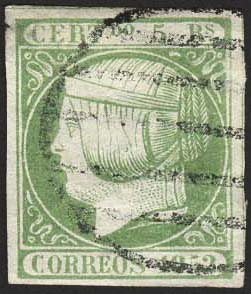

(Genuine)
Return To Catalogue - Queen Isabella, 1852-1853 - Spain overview
Note: on my website many of the
pictures can not be seen! They are of course present in the
catalogue;
contact me if you want to purchase it.
Genuine stamp:
(Genuine)
Forgeries, examples:
Segui forgeries (relatively common):


(Segui forgeries? Usually uncancelled)


(Some Segui forgeries, right one with
cancel)
I know for certain that Segui made forgeries of the values: 12 Cs, 2 Rs, 5 Rs, 6 Rs,
Fournier forgeries


In 'The Fournier Album of Philatelic Forgeries' forgeries of all values can be found. The 'Reales' values do not have a dot below the 'DO' in the upper inscription in these forgeries. The '5' of '1852' has a shorter topstroke than in the genuine stamps. The 6 rs value has the '6' very large compared to a genuine stamp. In his 1914 pricelist Fournier offers all 5 values for 5 Swiss Francs (as first choice forgeries). In the Fournier forgeries, the piece of hair (or is it a ribbon?) above the 'S' of 'CORREOS' is more squarish than in the genuine stamps. There are also minor differences in the '5' (upper part more curved in the forgery).
(I've been told that the above 12 cs stamps are also Fournier
forgeries)


Forgeries taken from a Fournier Album of forgeries.
Spiro(?) forgeries:
I think the above forgeries are Spiro forgeries. The cancel on the 12 cs and 2 rs was never used in Spain. The lettering is very badly done in these forgeries.
Peter Winter forgeries:
The forger Peter Winter also made forgeries of these stamps, examples:


(Peter Winter forgeries)
Note that Peter Winter made the forgeries of the rare variety without dot behind 'CORREOS'.
Other forgeries:

The pearls in the corners are placed too far inside in this
forgery of the 5 r value. Also note the sour expression on the
face of the Queen.
Forgery with a very big chin of the Queen.
Forgery with 'C' of 'CORREOS' almost touching upper label and 'S'
of this word too large.

(Other forgery)
Sperati forgeries:

Sperati forgery of the 12 cs stamp. A white spot can be found in
the circle at the right hand side, where it touches the outer
frame line.

Sperati forgeries of the 2 R value. Sperati made 5 reproductions
of this stamp. They are all extremely deceptive.
Reproduction 'A' of the 2 Rs stamp

Reproduction 'B' of the 2 Rs stamp. Is known to exists in pairs
or strips of three stamps.


Reproduction 'C' and 'D' of the 2 Rs value. Both reproductions
exists printed side by side.

Reproduction 'E' of the 2 Rs value

Sperati forgery of the 5 r value.
Blackprint and proof Reproduction 'A' of the 5 r value.

Sperati forgery of the 6 r value (Reproduction 'A'); the 'C' of
'CERT' is broken at the top. The lower right hand side of the '1'
of '1852' has a white smudge in it.

Sperati also made a 'Reproduction B' of the 6 r value. The 'C' of
'CERT' is broken at the top and bottom.
Sperati cancelled 'proof' mini sheet with two 6 r stamps,
so-called Reproduction 'C' and 'D'. The cancel is always in the
same position.


{kind=link}
{kind=link}